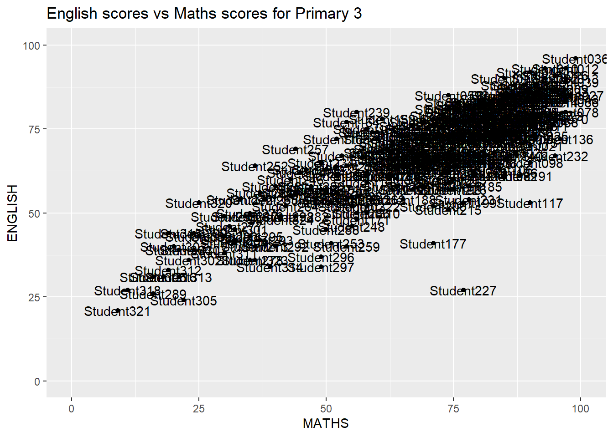
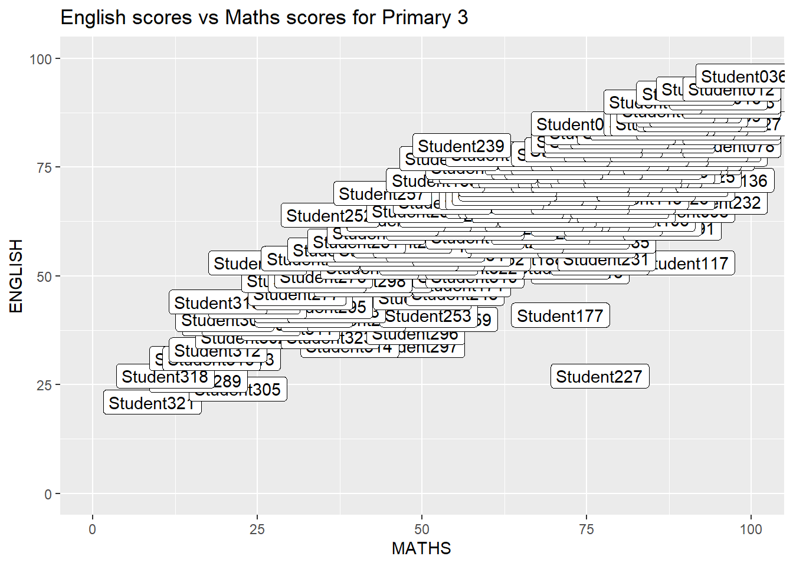
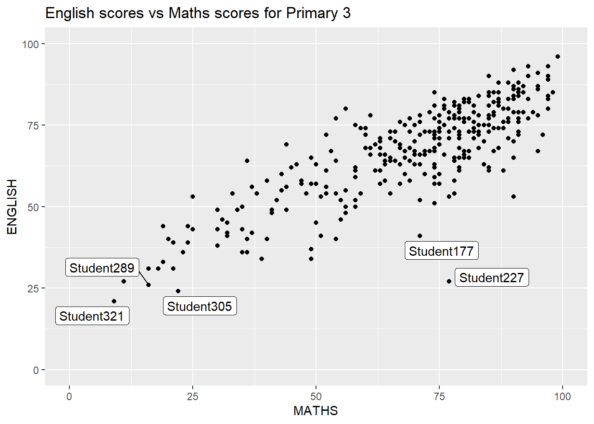
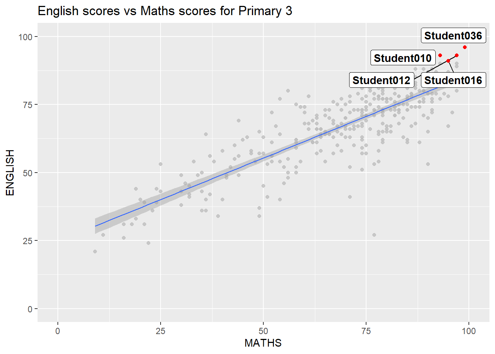
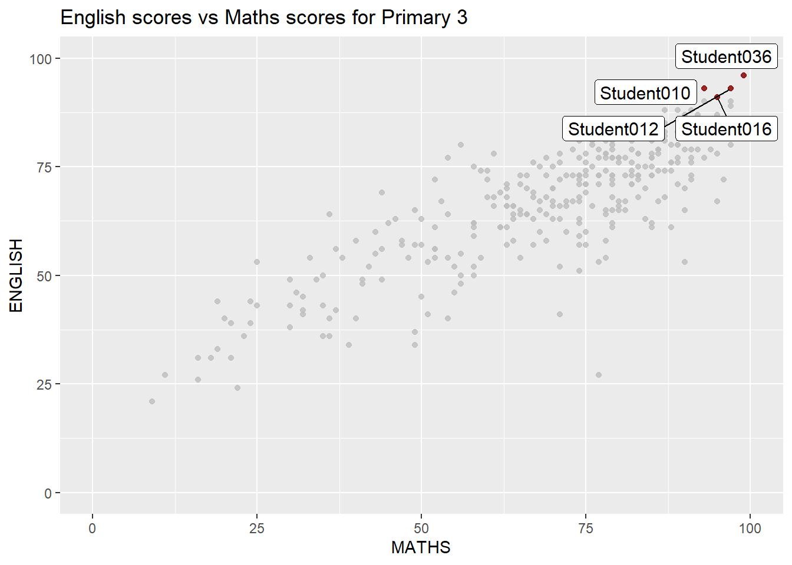
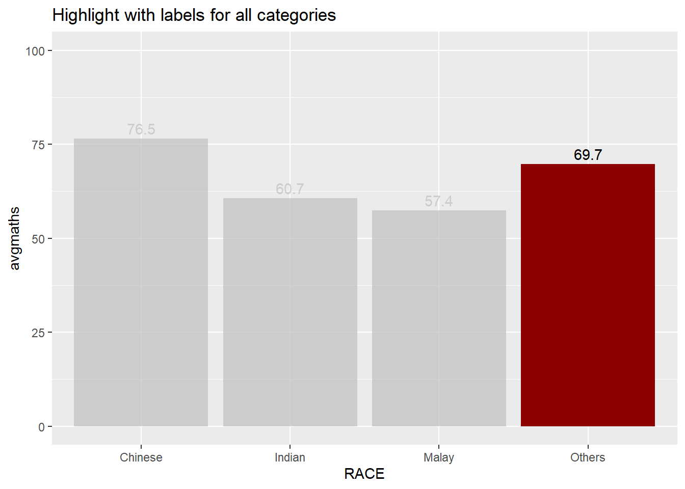

In this exercise, we will learn to make further customisations to charts in ggplot2. We will also be introduced to several ggplot2 extensions for creating more elegant and effective statistical graphics.
2 Getting Started
2.1 Install and Launch R packages
In this exercise, besides tidyverse, we will also explore other R packages as follows:
For annotations and highlighting:
ggrepel: provides geoms for ggplot2 to repel overlapping text labels
gghighlight:
For themes:
ggthemes: provides some extra themes, geoms, and scales for ‘ggplot2’
hrbrthemes: provides typography-centric themes and theme components for ggplot2
For multiple charts:
patchwork: for preparing composite figures
cowplot: for preparing publication-quality composite figures
gridExtra: for combining multiple figures
The code chunk below will be used to check if these packages have been installed and to load them into our working R environment.
package 'gghighlight' successfully unpacked and MD5 sums checked
The downloaded binary packages are in
C:\Users\fongb\AppData\Local\Temp\RtmpM9bUqW\downloaded_packages
package 'ggthemes' successfully unpacked and MD5 sums checked
The downloaded binary packages are in
C:\Users\fongb\AppData\Local\Temp\RtmpM9bUqW\downloaded_packages
package 'cowplot' successfully unpacked and MD5 sums checked
The downloaded binary packages are in
C:\Users\fongb\AppData\Local\Temp\RtmpM9bUqW\downloaded_packages
package 'gridExtra' successfully unpacked and MD5 sums checked
The downloaded binary packages are in
C:\Users\fongb\AppData\Local\Temp\RtmpM9bUqW\downloaded_packages
2.2 Import Data
We will import Exam_data.csv into the R environment using read_csv() function of readr package. The dataset comprises of year end examination grades of a cohort of Primary 3 students.
exam_data <-read_csv("data/Exam_data.csv")
There are a total of seven attributes in the exam_data tibble data frame. Four of them are categorical data type and the other three are in continuous data type.
The categorical attributes are: ID, CLASS, GENDER and RACE.
The continuous attributes are: MATHS, ENGLISH and SCIENCE.
3 Advanced customisation to ggplot2
3.1 Annotations and Highlights
3.1.1 Using geom_text() and geom_label()
geom_text(): adds text directly to the plot
geom_label(): draws a rectangle underneath the text, making it easier to read
ggplot(data=exam_data, aes(x=MATHS, y=ENGLISH, label=ID)) +geom_point() +coord_cartesian(xlim=c(0,100), ylim=c(0,100)) +geom_text() +# alternatively we can include aes(label=ID) under geom_label()ggtitle("English scores vs Maths scores for Primary 3")

ggplot(data=exam_data, aes(x=MATHS, y=ENGLISH, label=ID)) +geom_point() +coord_cartesian(xlim=c(0,100), ylim=c(0,100)) +geom_label() +# alternatively we can include aes(label=ID) under geom_label()ggtitle("English scores vs Maths scores for Primary 3")

Note
Others useful arguments for geom_text() and geom_label() are:
nudge_x and nudge_y: let you offset labels from their corresponding points. The function position_nudge() can be also used
hjust and vjust can now be character vectors (ggplot2 v >= 2.0.0): “left”, “center”, “right”, “bottom”, “middle”, “top”. New options include “inward” and “outward” which align text towards and away from the center of the plot respectively.
3.1.3 Using ggrepel: Avoid overlapping of text labels
Alternatively, we can use R package ggrepel, which is an extension and provides geom for ggplot2 to repel overlapping text labels away from each other. We simply replace geom_text() with geom_text_repel() and geom_label() with geom_label_repel.
ggplot(data=exam_data, aes(x=MATHS, y=ENGLISH, label=ID)) +geom_point() +coord_cartesian(xlim=c(0,100), ylim=c(0,100)) +geom_label_repel() +ggtitle("English scores vs Maths scores for Primary 3")

Note
Some text labels will be discarded if they have too many overlaps. We can adjust the threshold by providing the max.overlaps argument to geom_text_repel() or geom_label_repel().
There might be cases when there are specific points that we wish to highlight and label. We can do so by passing in the separate data and adding the geom_text_repel() and geom_point() for this separate dataset.
# in this example, we want to highlight the top studentsexam_data_to_label <- exam_data %>%filter(MATHS >90& ENGLISH >90)ggplot(data=exam_data, aes(x=MATHS, y=ENGLISH)) +geom_point(colour='grey', alpha=0.8) +geom_smooth(method=lm, size=0.5) +coord_cartesian(xlim=c(0,100), ylim=c(0,100)) +geom_label_repel(data=exam_data_to_label, aes(label=ID),fontface='bold', max.overlaps=Inf) +geom_point(data=exam_data_to_label, colour='red') +ggtitle("English scores vs Maths scores for Primary 3")

3.1.4 Using gghighlight: highlight areas in our plot
With gghighlight, we can simply add the gghighlight() function to our plot with the conditions set to identify our subset.
The following code chunk shows a similar plot to the above but without the need to filter out and plot the data we wish to highlight separately.
ggplot(data=exam_data, aes(x=MATHS, y=ENGLISH)) +geom_point(colour ='darkred', alpha=0.8) +gghighlight(MATHS >90& ENGLISH >90,unhighlighted_colour =alpha("grey", 0.4),use_direct_label = T,label_key = ID,label_params =list(size =4)) +coord_cartesian(xlim=c(0,100), ylim=c(0,100)) +ggtitle("English scores vs Maths scores for Primary 3")

The following is an example of gghighlight on bar charts.
exam_data %>%group_by(RACE) %>%summarise(avgmaths =round(mean(MATHS, na.rm=T),1)) %>%ggplot(aes(x=RACE, y=avgmaths)) +geom_bar(stat="identity", fill="darkred") +geom_text(aes(label=avgmaths), vjust=-0.4) +gghighlight(RACE=="Others") +coord_cartesian(ylim=c(0, 100)) +ggtitle("Highlight with labels for all categories")

In the above plot, the labels appear for all categories. We can choose to hide text that we do not wish to highlight by moving geom_text() function after the gghighlight() function.
exam_data %>%group_by(RACE) %>%summarise(avgmaths =round(mean(MATHS, na.rm=T),1)) %>%ggplot(aes(x=RACE, y=avgmaths)) +geom_bar(stat="identity", fill="darkred") +gghighlight(RACE=="Others") +geom_text(aes(label=avgmaths), vjust=-0.4) +coord_cartesian(ylim=c(0, 100)) +ggtitle("Highlight with labels for highlighted category")
ggplot2 comes with eight built-in themes: theme_gray(), theme_bw(), theme_classic(), theme_dark(), theme_light(), theme_linedraw(), theme_minimal(), and theme_void().
Below is an example of a plot using the built-in theme: theme_gray().
hrbrthemes package provides a base theme that focuses on typographic elements, including where various labels are placed as well as the fonts that are used. The second goal centers around productivity for a production workflow. In fact, this “production workflow” is the context for where the elements of hrbrthemes should be used. Consult this vignette to learn more.
In the following example, the core theme: theme_ipsum (“ipsum” is Latin for “precise”) uses Arial Narrow, and we can customise the elements of the chart using the arguments inside the theme.
axis_title_size argument is used to increase the font size of the axis title to 18
base_size argument is used to increase the default axis label to 15
grid argument is used to remove the x-axis grid lines
3.3 Arrange Multiple Charts
It is not unusual that multiple graphs are required to tell a compelling visual story. There are several ggplot2 extensions provide functions to compose figure with multiple graphs. First let us create three statistical charts below.
Plot 1: Histogram of Maths score
Plot 2: Histogram of English score
Plot 3: Scatterplot of English score vs Maths score
3.3.1.4 Creating composite figures on top of each other
Beside providing functions to place plots next to each other based on the provided layout. With inset_element() of patchwork, we can place one or several plots or graphic elements freely on top or below another plot.
The cowplot package, developed by Claus O. Wilke provides a publication-ready theme for ggplot2 and allows to combine multiple plots in the same figure.
Usually, we use ggsave() [in ggplot2 package] to save ggplots. However, when working with cowplot, the function save_plot() [in cowplot package] is preferred.
combined <-ggdraw() +draw_plot(p1, x=0, y=0.5, width=0.5, height=0.5) +draw_plot(p2, x=0.5, y=0.5, width=0.5, height=0.5) +draw_plot(p3, x=0, y=0, width=1, height=0.5) +draw_plot_label(label=c("A","B","C"),x=c(0,0.5,0), y=c(1,1,0.5), size=15)# each individual subplot should have an aspect ratio of 1.8save_plot("combined.pdf", combined,base_aspect_ratio=1.8)
3.3.3 Using gridExtra
The function grid.arrange() [in the package gridExtra] is another solution for mixing multiple graphs. For more customisation and details, refer here.
Note
In the R code below layout_matrix is a 2x2 matrix (2 columns and 2 rows). Here, we are specifying that the first row (from top) comprises of plot 1 and plot 2 for columns 1 and 2, whereas the second row contains plot 3 spanning the 2 columns.